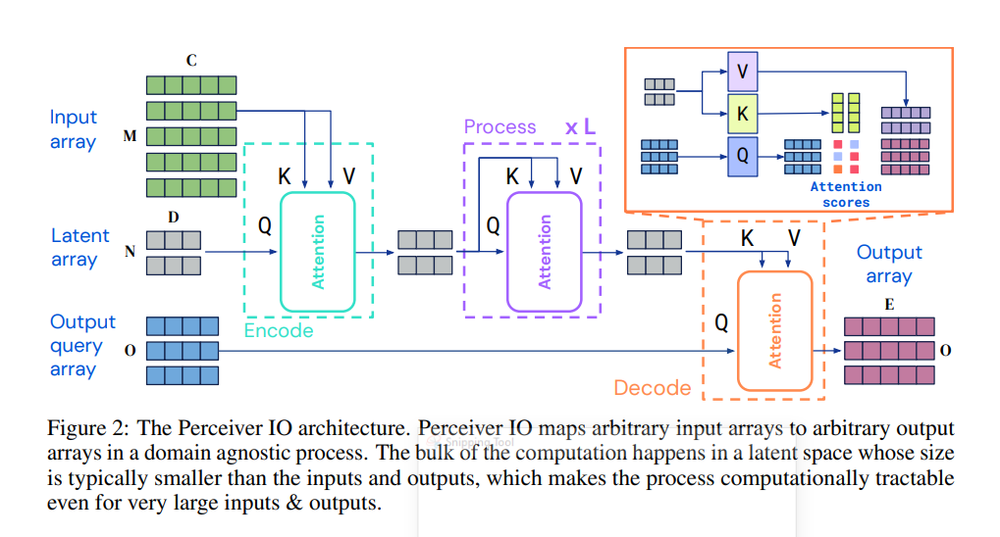

Welcome to gperc’s documentation!¶
gperc simplifies using PerceiverIO
an architecture by DeepMind which does shape transformation as mno,cde ie. it comsumes a shape
m,c, converts it to latents n,d and finally transforms it to o,e. All transformations happen
using self-attention mechanism in an encoder (gperc.Encoder) → processor (gperc.Processor) →
decoder (gperc.Decoder) format. This allows it to get away with very long sequences that cannot
usually be managed by vanilla transformers.
The simplicity of its formula along with general improvement of field means it is a higly practical tool given sufficient data.
This is mostly an auto generated documentation and documentation for submodules is in the code files. When building such a tool it is very important to know how to use it, so I have added stories where you can read and see how to get the thing working. Since this is a very power general structure you must understand configurations well.
Samples¶
Here is how you can build a classification model using gperc.ImageConfig in just a few lines:
from gperc import ImageConfig, Perceiver
import torch
conf = ImageConfig(
image_shape = [224, 224, 3], # in [H, W, C] format
latent_len = 128,
latent_dim = 128,
n_classes = 100,
)
model = Perceiver(conf)
out = model(torch.randn(2, 224 * 224, 3))
assert out.shape == (2, 100)
Indices and tables¶
Documentation